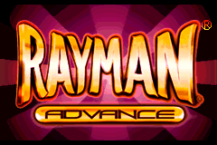

Rayman Advance (USA) (En,Fr,De,Es,It)
EEPROM 4K gbakit Built-In 💾 MultiBoot
Cartridge Identity
- Game Code
ARYE(FamilyARY)- Header Title
RAYMAN- Maker / Revision
41/ rev0- ROM Size
- 8.0 MiB (8,388,608 B)
- Save Media
EEPROM 4K- SHA-256
412eefc515fe40033e9bac640bc5842e60b531014c563c60659c9e574570fb72- Engine / SDK Group
comm-004(98 families)
Screenshots

Link Cable & Multiplayer Communications
This title contains detected communication capabilities: 💾 MultiBoot.
Detailed protocol specifications, SIO registers, Joybus commands, and MultiBoot sequences are documented in the Link & Multiplayer Reference.
- Single-Cart MultiBoot
- Single-Cartridge MultiBoot (Download Play) client/server handler · Thumb SWI 0x25 (
0xDF25):0x057d5c,0x11a1bc,0x11acc2,0x681944
Battery Save Support in gbakit
Built-in definition (ARYE)
gbakit save verify ARYE save.sav
gbakit save decode ARYE save.sav
gbakit save fix ARYE damaged.sav -o repaired.savROM Assets, Compression & Audio
- BIOS Compression
- LZ77 (
0x10): 143 streams · RLE (0x30): 0 streams - ROM Pointer Tables
- 31 tables (0 pointing to validated compressed streams)
- SDK Backup Tags
EEPROM_V111
Text, Fonts & Scene Data
- Primary Text Encoding
- Plain ASCII (uncompressed) (
362ASCII strings ·1Shift-JIS runs) - Font & VWF Indicators
- VWF Width Table 1bpp Font · BIOS SWIs: BitUnPack
0x10:16· LZ770x11/12:30· Huffman0x13:16· RLE0x14/15:13 - Scene & Packaging
65ROM pointer tables (≥32 entries,23≥200) ·16relativeu32TOCs ·366OAM metasprite hits
Password System
- Save Media
- Battery-Backed (EEPROM)
- Password Class
- Password UI Strings Detected (
password_ui_strings_only) - Password UI Strings
enter password,password,wrong password,mot de passe,passwort
Hardware MMIO Subsystems
ppu_display0x8041810,0x8042a5c
Regional Variants & Revisions (Family ARY)
- Rayman Advance (Europe) (En,Fr,De,Es,It) (
ARYP, 8 MiB) - Rayman Advance (Europe) (En,Fr,De,Es,It) (Beta) (
ARYP, 8 MiB)